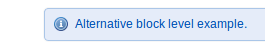

JavaScript is currently disabled in your web browser. For full functionality of this site, it is necessary to enable JavaScript. Here are instructions how to enable JavaScript.
 This is the page description of the developmen index page. This is so cool because it is being injected in by the Liquid template system and being structured by a special partial template include.